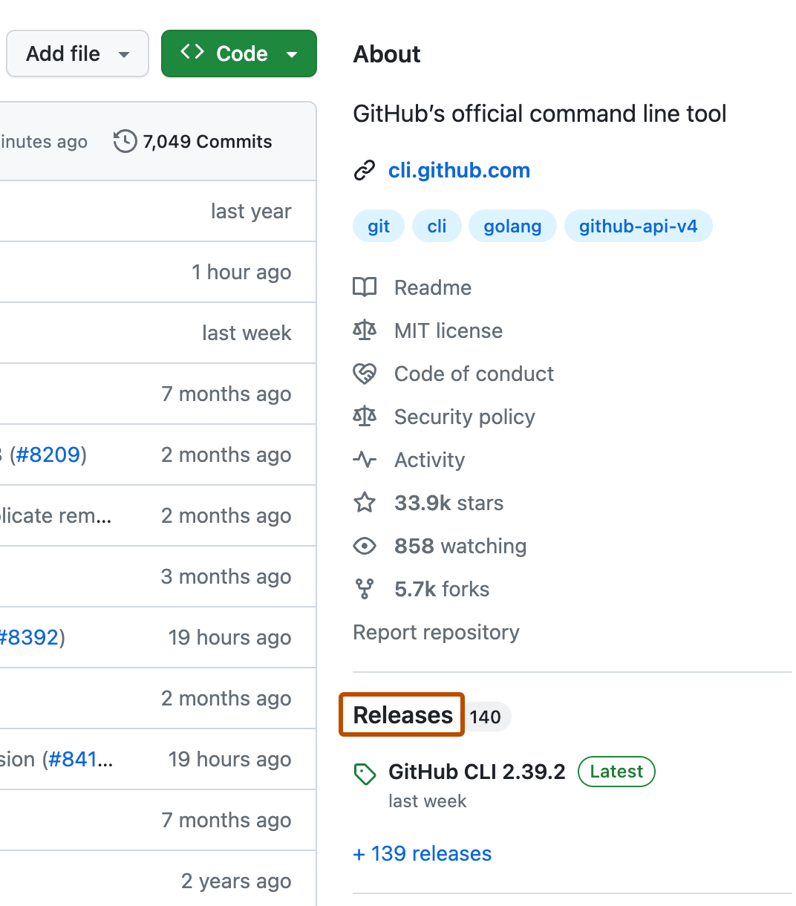

You can avoid tampering and accidental changes by ensuring the releases you use have not been modified after publication.
Before you can validate the authenticity of a release and its assets on the command line, you need to install the GitHub CLI.
On the command line, open the repository containing the release you want to verify.
To verify a release exists and is immutable, run the following command:
gh release verify RELEASE-TAG
To verify a local artifact is an exact match for a release asset, run the following command:
gh release verify-asset RELEASE-TAG ARTIFACT-PATH
Note
This command cannot be used to verify the source code zip file or tarball for a release, since these assets are only created when a download is requested.
On GitHub, navigate to the main page of the repository.
To the right of the list of files, click Releases.

To the left of the release you want to verify, below the release author, confirm that " Immutable" is present.